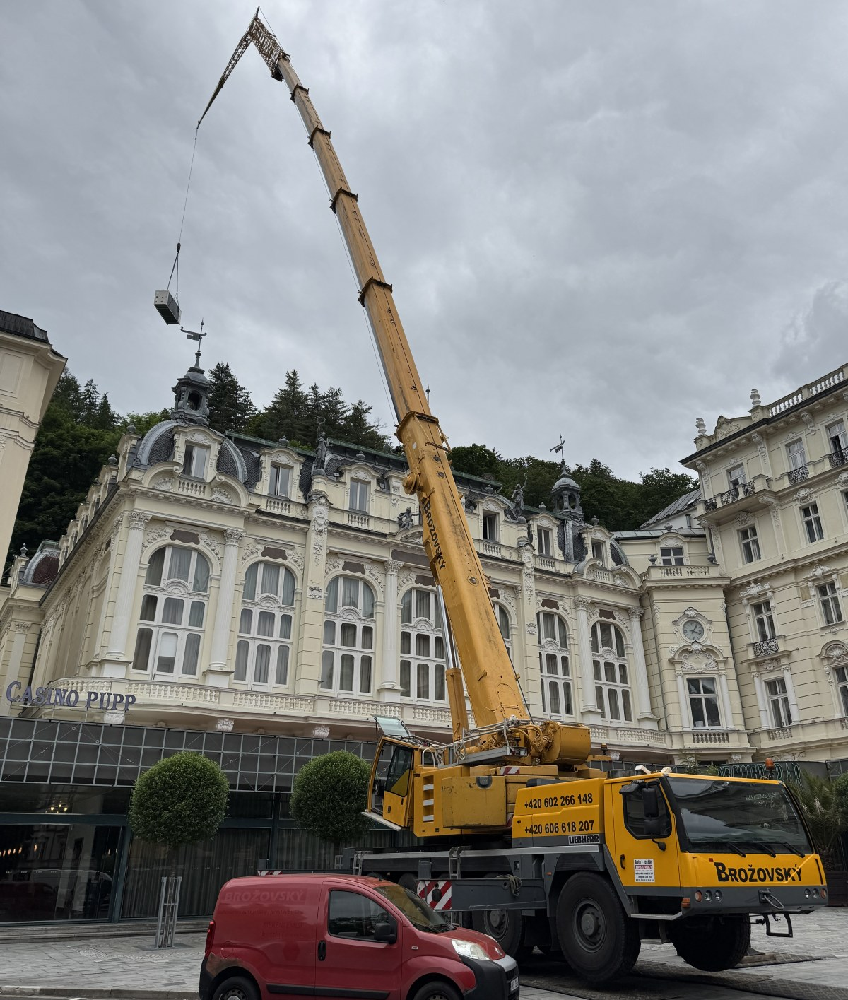
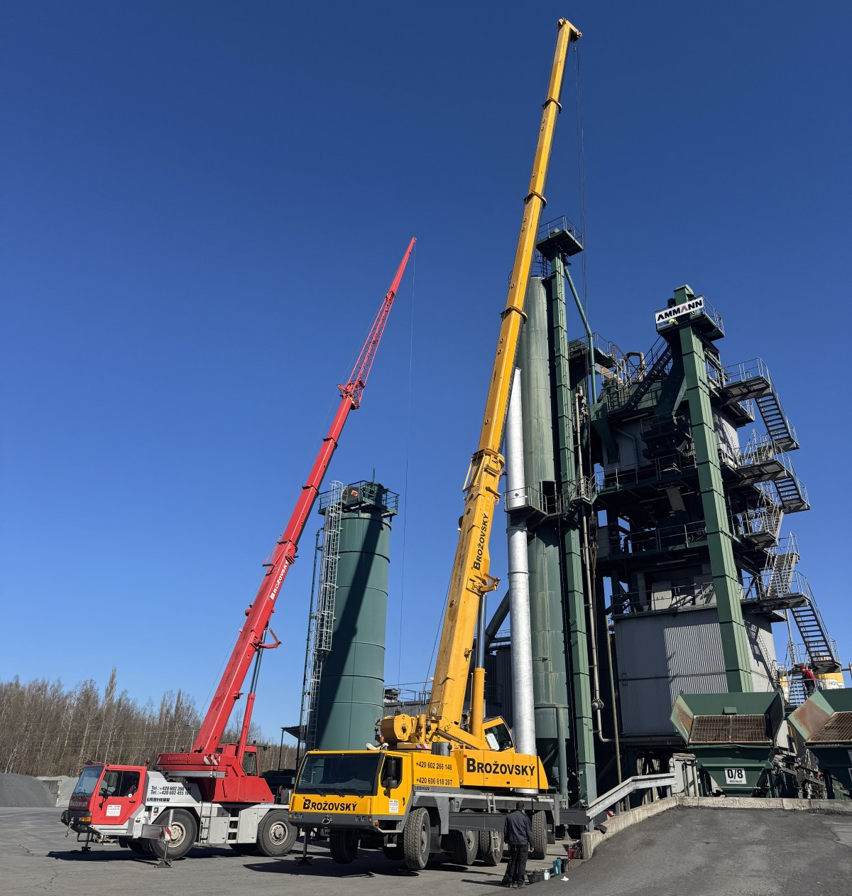
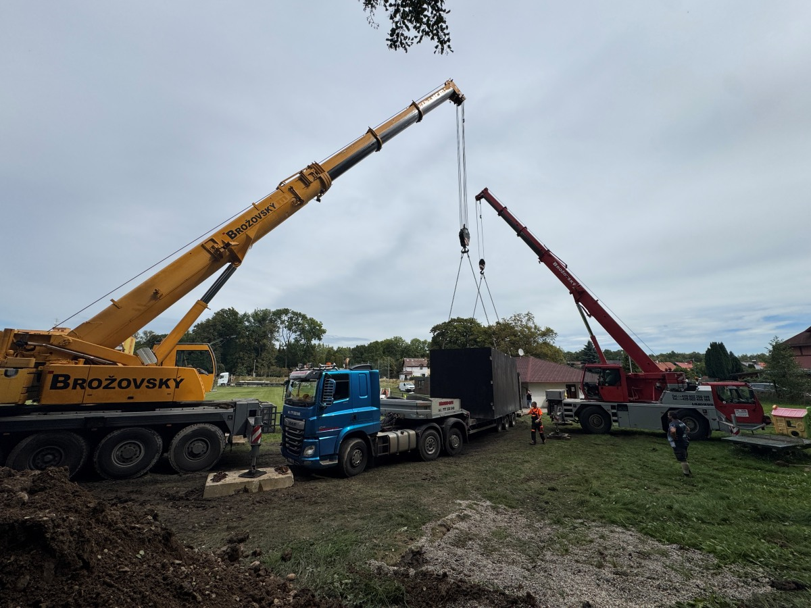

Liebherr LTM 1100
Náš nejtěžší kalibr, s nosností až 100 tun a dosahem přes 50 metrů.
Jeřáby s nosností 30 a 100 tun, nákladní doprava a kloubová plošina. Zavolejte nám, rádi se s vámi domluvíme.
Kontaktujte násJsme rodinná firma a jeřábům se věnujeme od roku 1993. Každou zakázku děláme poctivě a s osobním přístupem – tak, jak to máme v rodině zažité už po generace.
Specializujeme se na jeřábnické práce všeho druhu, od drobných montáží až po velké stavební akce. Kromě jeřábů máme také tahač Mercedes-Benz Actros s velkým plato přívěsem pro přepravu rozměrných a těžkých nákladů a nákladní vůz Volvo FL s hydraulickou rukou a kontejnerovým systémem (plato i hluboký kontejner). Pro práce ve výškách využíváme plošinu s dosahem 16 metrů.
Naší další specializací je servis aut. V našem autoservisu máme profesionála, který si poradí s každým problémem. Nabízíme servisní služby pro veškeré značky vozidel: diagnostiku, mechanické práce, běžné servisní prohlídky, karosářské práce, autoskloservis a pneuservis.
Náš nejtěžší kalibr, s nosností až 100 tun a dosahem přes 50 metrů.

Menší, praktický jeřáb s nosností až 30 tun a dosahem 30 metrů, s možností prodloužení.

Tahač Actros s platem, převoz všeho druhu s možností vozit až 28 tun.

Nákladní kontejnerové auto s možností vozit náklad do 5 tun, s hydraulickou rukou s nosností 2,5 tuny. Kontejner plato a stavební.

Kloubová plošina na autě s dosahem 16 metrů.
Pokud na něco nebude stačit naše 1030, pravidelně jezdíme s naším 1100 jeřábem, kde podle vzdálenosti a váhy účtujeme nižší sazbu jako za jeřáb 1055 nebo 1070. Vždy se tedy přizpůsobíme potřebám našich zákazníků tak, aby byly obě strany spokojené. I se dvěma stroji tedy zvládáme pokrýt vše v rozpětí 1020–1100.
Když si nejste jistí, vše s vámi pečlivě zkonzultujeme a bezplatně se dojedeme i podívat na místo práce. Zvážíme naše možnosti a vybereme tu nejlepší pro vás. Při práci v terénu si dovezeme panely pod packy, abychom zajistili hladký průběh jeřábování, a máme k pronájmu i plastové pojezdové desky, které ochrání zahradu či louku před úplným rozježděním.

Precizní montáž klimatizačních jednotek v srdci Karlových Varů – Grandhotel Pupp. Díky přídavnému krákorci na jeřábu Liebherr LTM 1100 jsme mohli maximalizovat dosah a zajistit efektivní osazení všech jednotek.

Efektivní práce a údržba na asfaltové obalovně s nasazením obou našich jeřábů – Liebherr LTM 1030 a LTM 1100, pro maximální flexibilitu a výkon.

Precizní usazení betonové jímky pro zásobárnu vody fotbalového hřiště ve Svatavě. Naše technika zajistila bezpečnou a přesnou manipulaci s těžkým nákladem.
Ceník naší techniky vám zašleme na vyžádání, nebo nám neváhejte zavolat.
Auto-Jeřáby Brožovský s.r.o.
Autojeřáby, přeprava, plošiny
Tel.: +420 602 266 148
Tel.: +420 606 618 207
info@brozovsky.cz
autodoprava.brozovsky@seznam.cz
Miroslav Brožovský
Tel.: +420 602 455 184
miroslav.brozovsky@brozovsky.cz